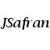
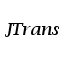

Personal website
Speech, Natural Language & Computers
-
About This Template
Nullamlacus dui ipsum conseque loborttis non euisque morbi penas dapibulum orna. Urnaultrices quis curabitur phasellentesque congue magnis vestibulum quismodo nulla et feugiat. Adipisciniapellentum leo ut consequam ris felit elit id nibh sociis malesuada.
-
Indonectetus facilis leo nibh
Nullamlacus dui ipsum conseque loborttis non euisque morbi penas dapibulum orna. Urnaultrices quis curabitur phasellentesque congue magnis vestibulum quismodo nulla et feugiat. Adipisciniapellentum leo ut consequam ris felit elit id nibh sociis malesuada.
fsdjkfd sjklfd sjklfsd jklfdsj klfdj sklfj dsklfjd s fsdjkfdjsklfd sklfjsd lf jsdklfj sdkjlf dklfsdj fsdjkfdjsklfd sklfjsd lf jsdklfj sdkjlf dklfsdj fsdjkfdjsklfd sklfjsd lf jsdklfj sdkjlf dklfsdj fsdjkfdjsklfd sklfjsd lf jsdklfj sdkjlf dklfsdj fsdjkfdjsklfd sklfjsd lf jsdklfj sdkjlf dklfsdj
-
 Free syntax editor/parser
JSafran is an open-source 100%-Java software to annotate a text&audio corpus with syntactic dependency trees, either manually, automatically or semi-automatically. It integrates the Malt-parser, the MATE parser, the Treetagger, plus experimental unsupervised rule-base Bayesian models. It can be interfaced with JTrans to automatically align the sound file and listen to specific utterances. It integrates JGIT to support collaborative edition & versionning, CoNLL'05-06-08-09 I/O, and many more features...
-
 Free speech-text alignment
JTrans is an open-source 100%-Java software to automatically align speech files and text (in French), all this within a simple GUI that gives options to manually correct the alignment while it is aligning. It supports Praat format, includes 3 phonetizers and the Sphinx4 library. Experimental features: simple GUI based auto. speech transcription, simple bias adaptation...